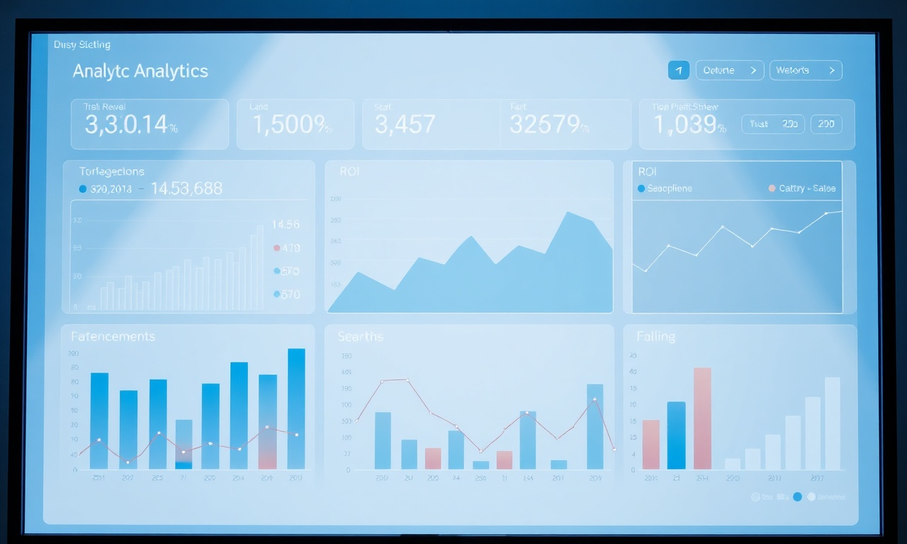

Pourquoi le SEO local est indispensable pour votre PME au Maroc
Dans un marché marocain de plus en plus concurrentiel, le SEO local est un levier incontournable pour les PME. En optimisant votre présence en ligne pour les recherches locales, vous attirez des clients situés à proximité de votre établissement, prêts à acheter. Selon une étude, 46% des recherches Google ont une intention locale. Ignorer cette opportunité, c'est laisser vos concurrents capter cette clientèle.
Notre formation SEO local PME vous donne les clés pour apparaître en tête des résultats de recherche à Casablanca, Rabat, Marrakech ou toute autre ville du Royaume. Vous apprendrez à optimiser votre fiche Google My Business, à obtenir des avis positifs et à créer du contenu local pertinent.
Les fondamentaux du SEO local pour les PME marocaines
Google My Business : votre vitrine gratuite
La première étape est de revendiquer et optimiser votre fiche Google My Business. Assurez-vous que vos informations (nom, adresse, téléphone) sont exactes et cohérentes avec celles de votre site web. Ajoutez des photos de qualité, des horaires à jour et répondez aux avis clients. Une fiche complète augmente vos chances d'apparaître dans le Google Local Pack.
Want to implement these strategies effortlessly? Our DatRey experts handle it for you.
Citations et annuaires locaux
Les citations (mentions de votre entreprise sur d'autres sites) sont essentielles. Inscrivez votre PME sur des annuaires marocains comme pagesjaunes.ma, annuaire.ma ou societe.ma. Veillez à la cohérence du NAP (Nom, Adresse, Téléphone) sur toutes les plateformes. Une étude montre que les entreprises avec des citations cohérentes ont 2,5 fois plus de chances d'être trouvées.
Contenu localisé
Créez du contenu qui parle à votre audience marocaine. Par exemple, un article sur "Les meilleurs restaurants de Casablanca" si vous êtes un traiteur. Utilisez des mots-clés avec des variantes locales (ex: "agence digitale à Casablanca" plutôt que "agence digitale"). Les blogs, pages de services et témoignages clients enrichis de références locales améliorent votre pertinence.
Stratégies avancées de SEO local pour PME
Optimisation pour la recherche vocale
Avec l'essor des assistants vocaux, les recherches locales sont souvent formulées en langage naturel. Intégrez des questions fréquentes dans votre contenu, comme "Où trouver un plombier à Marrakech ?". Notre formation vous apprend à structurer vos données pour répondre à ces requêtes.
Gestion des avis en ligne
Les avis Google influencent directement votre classement local. Encouragez vos clients satisfaits à laisser un avis et répondez à tous les commentaires, positifs ou négatifs, de manière professionnelle. Une note moyenne élevée et des réponses rapides améliorent votre crédibilité.
Backlinks locaux
Obtenez des liens depuis des sites web marocains de confiance : partenaires, chambres de commerce, médias locaux. Un backlink depuis un site comme lematin.ma ou h24info.ma renforce votre autorité locale.
Comparatif : SEO local vs SEO traditionnel
| Critère | SEO local | SEO traditionnel |
|---|---|---|
| Cible | Clients à proximité géographique | Audience nationale ou mondiale |
| Outil principal | Google My Business | Balises meta, netlinking |
| Mots-clés | "près de moi", "à Casablanca" | Génériques, longue traîne |
| Résultats | Local Pack, Google Maps | Pages de résultats classiques |
| Coût | Souvent moins cher | Peut être plus élevé |
Pour une PME marocaine, le SEO local offre un retour sur investissement plus rapide car il cible des clients prêts à acheter.
Étapes clés pour lancer votre SEO local
- Auditez votre présence en ligne actuelle (fiche GMB, site, avis).
- Optimisez votre fiche Google My Business avec photos et horaires.
- Créez des pages de services spécifiques à chaque ville où vous opérez.
- Sélectionnez 5 annuaires marocains et inscrivez-vous.
- Mettez en place une stratégie de collecte d'avis.
- Suivez vos performances avec Google Search Console et Google Analytics.
FAQ SEO local pour PME
Combien de temps faut-il pour voir des résultats en SEO local ?
Généralement, les premiers résultats apparaissent sous 3 à 6 mois. Cependant, l'optimisation de votre fiche GMB peut générer des clics dès les premières semaines.
Le SEO local fonctionne-t-il pour les entreprises sans boutique physique ?
Oui, si vous servez une zone géographique précise (ex: plombier, consultant). Vous pouvez masquer votre adresse dans GMB et définir un rayon de service.
Quel est le budget minimum pour une formation SEO local ?
Notre formation est accessible à partir de 1500 DH. Contactez-nous pour un devis personnalisé.
Conclusion : passez à l'action avec DatRey
Le SEO local est un investissement rentable pour toute PME marocaine souhaitant accroître sa visibilité et attirer plus de clients. Avec notre formation SEO local PME, vous acquerrez des compétences pratiques et directement applicables.
Ne laissez pas vos concurrents dominer votre marché local. Inscrivez-vous dès maintenant à notre prochaine session ou contactez-nous pour une formation sur mesure. Découvrez aussi nos autres services : SEO global et Google Ads.


Besoin d'accompagnement ?
Les experts DatRey vous aident à atteindre vos objectifs digitaux au Maroc.
Demander un audit gratuit →